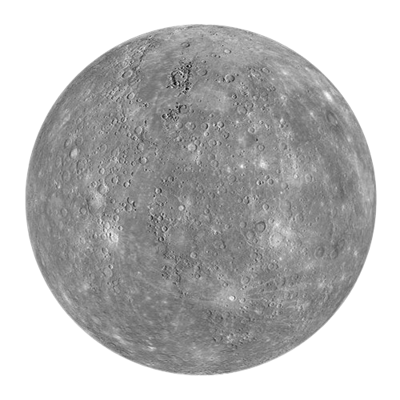
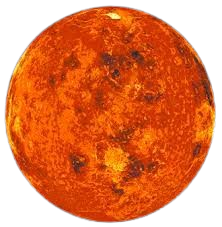
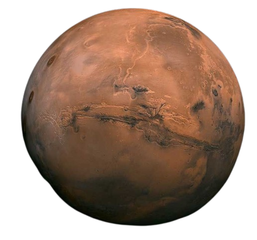

These terrestrial planets provide valuable insights into the processes that shaped the early solar system and the conditions necessary for the emergence of life.
Exploration missions, such as those to Mars, continue to deepen our understanding of these fascinating worlds.
(Mercury, Venus, Earth, and Mars)
Mercury (the smallest planet in our solar system):
Mercury is the closest planet to the Sun, with an average distance of about (58 million kilometers).
Extreme Temperatures: It experiences extreme temperature variations, with daytime temperatures reaching up to 425 degrees Celsius (800 degrees Fahrenheit )
and nighttime temperatures dropping to -180 degrees Celsius ( -290 degrees Fahrenheit).
Slow Rotation: Mercury has a slow rotation, taking about 59 Earth days to complete one rotation on its axis,
but it has a relatively fast orbital period of about 88 Earth days.

Venus is the second planet from the Sun.
>
Venus: Similar Size to Earth: Venus is often called Earth's "sister planet" because of its similar size and composition. It is only slightly smaller than Earth.
Thick Atmosphere: Venus has a thick atmosphere primarily composed of carbon dioxide, with clouds of sulfuric acid. This dense atmosphere traps heat, making Venus the hottest planet in our solar system,
even hotter than Mercury.
Retrograde Rotation: Venus rotates on its axis in the opposite direction to most other planets in the solar system, a phenomenon known as retrograde rotation.

Earth is the only astronomical object known to harbor life.
Earth:
Life-Supporting Environment: Earth is the only known planet to support life. Its atmosphere contains the right mix of gases, and its surface has liquid water an essential ingredient for life as we know it.
Diverse Ecosystems: Earth's surface is rich in biodiversity, featuring diverse ecosystems ranging from oceans to deserts, and supporting a wide variety of plant and animal life.
Moon: Earth has a relatively large moon, which plays a crucial role in stabilizing its axial tilt and influencing tides.
Mars The "Red Planet"
Mars:
The "Red Planet": Mars gets its reddish appearance from iron oxide, or rust, on its surface. The planet has a thin atmosphere composed mostly of carbon dioxide.
Olympus Mons: Mars is home to the largest volcano in the solar system, Olympus Mons, which is about 22 kilometers ( 13.6 miles ) high.
Evidence of Liquid Water: Mars has polar ice caps, and there is evidence that liquid water may have existed on its surface in the past. Scientists continue to search for signs of past or present life on Mars

.png)